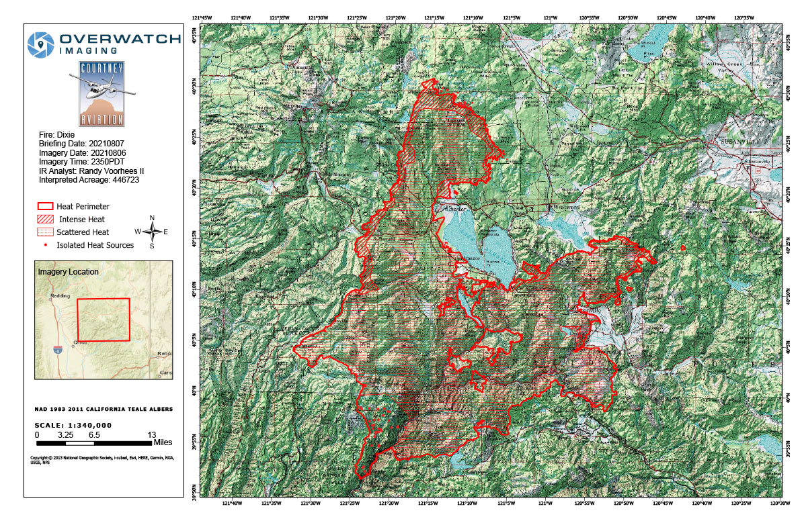

Applying change detection analysis using normalised burnt ratio (NBR) with Google Earth Engine Code Editor.
Digital Earth: Big Earth Data Concepts
The course provided the opportunity to get familiar with different topics related to satellite data, principles, tools and engines, data cubes, and so on. It motivated me personally to get in touch with Google Earth Engine, access images, filter based on desired dates, process the images, analyze based on the desired topic and extract valuable information out of it.
Therefore, this practice focused on Dixie Wildfire, which occured in July 2021. The goal was to classify the areas which are more likely to be burnt using Normalized Burnt Ration (NBR) index. The value was calculated by subtracting the NBR value of post-fire dates from pre-fire dates. The procedure was applied in Earth Engine Code Editor with the tutorial from UN-Spider.

The analysis procedure covers the following steps:
- Defining the Area of Interest (AOI) and the time periods before and after the wildfire;
- Selecting the Landsat 8 satellite imagery (LANDSAT/LC08/C01/T1_SR) for analysis;
- Filtering the imagery based on the specified time periods and AOI;
- Applying cloud masking to remove clouds and other unwanted pixels from the images;
- Mosaicing and clipping the pre-fire and post-fire images to the study area;
- Calculating the Normalized Burn Ratio (NBR) for both pre-fire and post-fire images;
- Computing the difference (dNBR) between pre-fire and post-fire NBR images and scale it to USGS standards;
- Displaying the pre-fire and post-fire NBR images, as well as the dNBR image in grayscale and classified forms;
- Calculating the burned area statistics by counting the pixels in each severity class and calculating the area in hectares and percentage;
- Adding a legend to the map indicating the different severity classes.
{kind=link}
However, it's important to note that this process can also detect changes in the environment that are not related to wildfires. For instance, it can identify changes in natural vegetation, deforestation, and other alterations to the land cover. To ensure reliant results, certain steps are taken to eliminate the effects of snow, clouds, and their shadows, consider NDVI changes, and apply the analysis using infrared band or other types of data such as radar. The image below show the extent of the burnt area, related to 7 August 2021.
